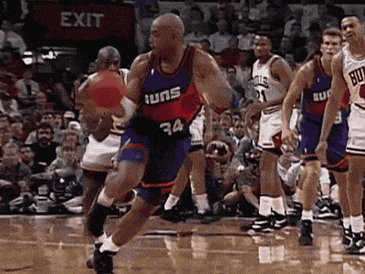
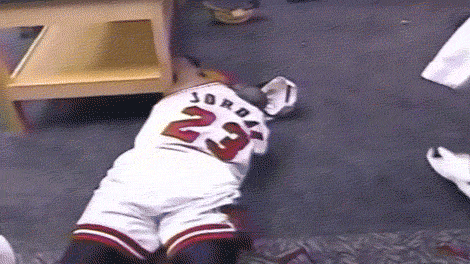
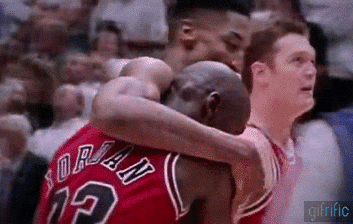
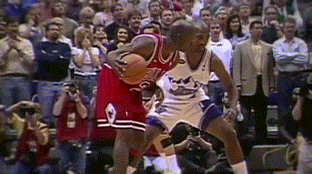

Jordan led the Bulls to six NBA championships from 1991-98.
The Bulls won three straight NBA championships from 1991-93
and three more from 1996-98.
Jordan was the NBA Finals MVP in all
six NBA championship runs.
1991. NBA Finals
Chicago beat the Los Angeles Lakers —
led by Magic Johnson — in five games.
Jordan averaged 31.2 points per game,
11.4 assists and 6.6 rebounds in the
series – which he highlighted with the
iconic "switch hands" layup.


1992. NBA Finals
Chicago beat Portland in six games for its second NBA championship.
Jordan scored 35 of his 39 points in Game 1 –
which is best remembered for "The Shrug." Jordan
averaged 35.8 points, 6.5 assists and 4.8 rebounds
for the series.
1993. NBA Finals
Phoenix had NBA MVP Charles Barkley, but the Bulls won the
series in six games behind Jordan,
who averaged 41 points, 8.5 rebounds
and 6.3 assists for the series.


1996. NBA Finals
The Bulls won 72 games in the regular season, and they
beat Seattle in six games for their fourth NBA championship.
Jordan led Chicago with 27.3 points,
5.3 rebounds and 4.2 assists. The Bulls clinched the series on Father's Day, which was especially meaningful for Jordan because
it was first championship since his father James died.
1997. NBA Finals
The Jazz had NBA MVP Karl Malone,
but the Bulls won the series in six games behind Jordan,
who averaged 32.3 points, seven rebounds
and six assists. This series featured the famous "Flu Game"
in Game 5 where Jordan scored 38 points despite battling
flu-like symptoms.


1998. NBA Finals
Jordan led the final NBA championship run that is being
chronicled in "The Last Dance." Chicago beat Utah in six games, and
Jordan closed the series in Game 6 with
"The Shot" over Byron Russell. Jordan averaged 33.5 points,
four rebounds and 2.3 assists in the series.